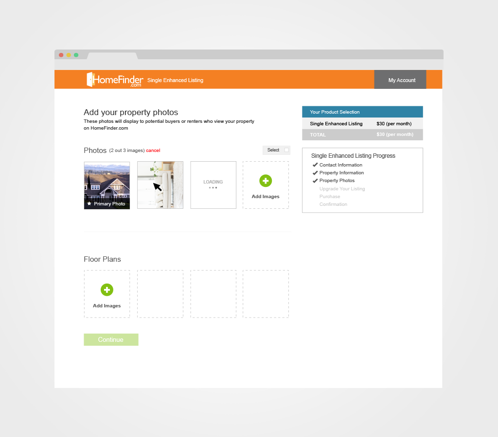
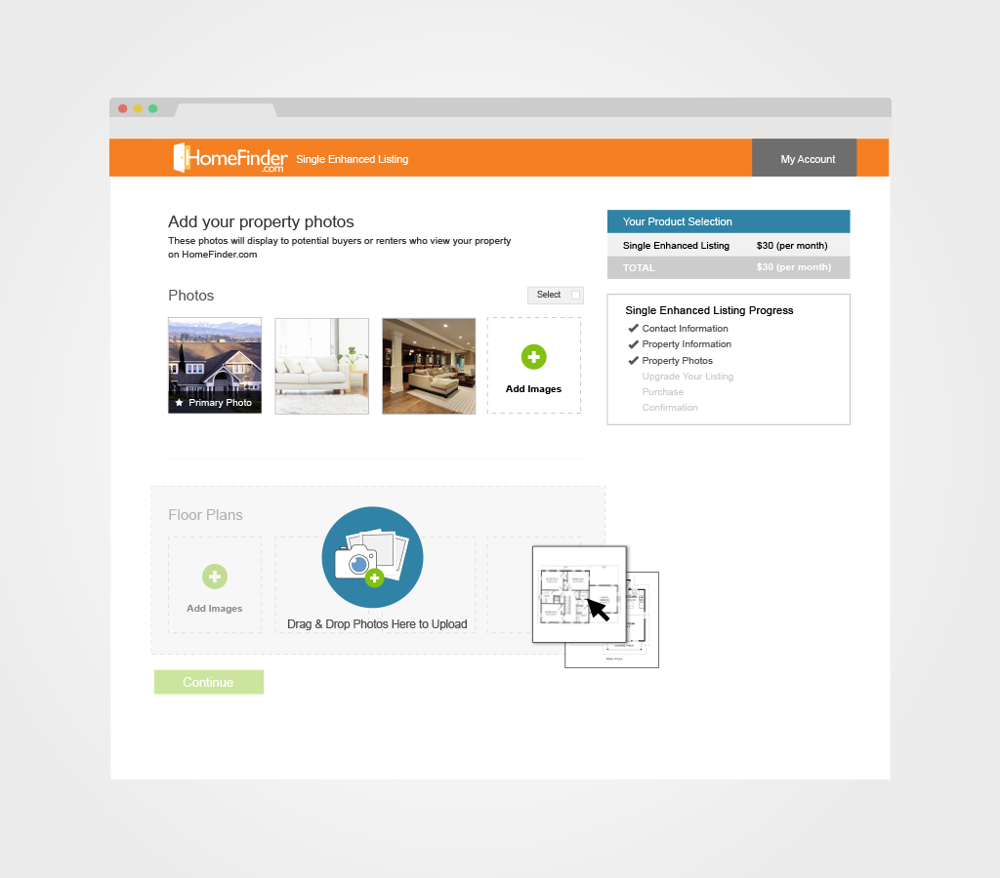
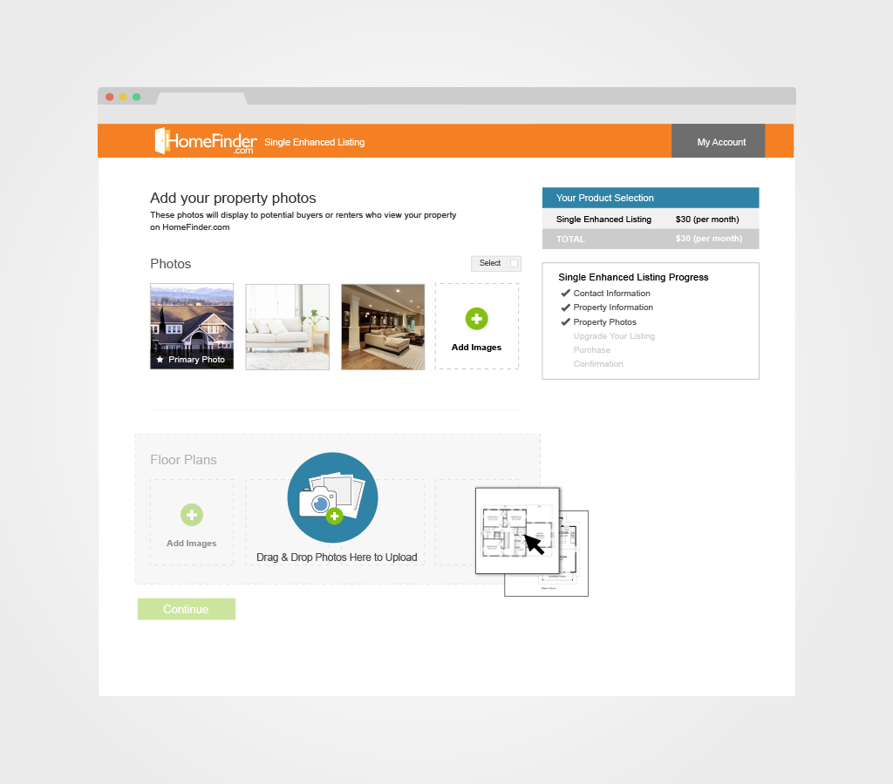
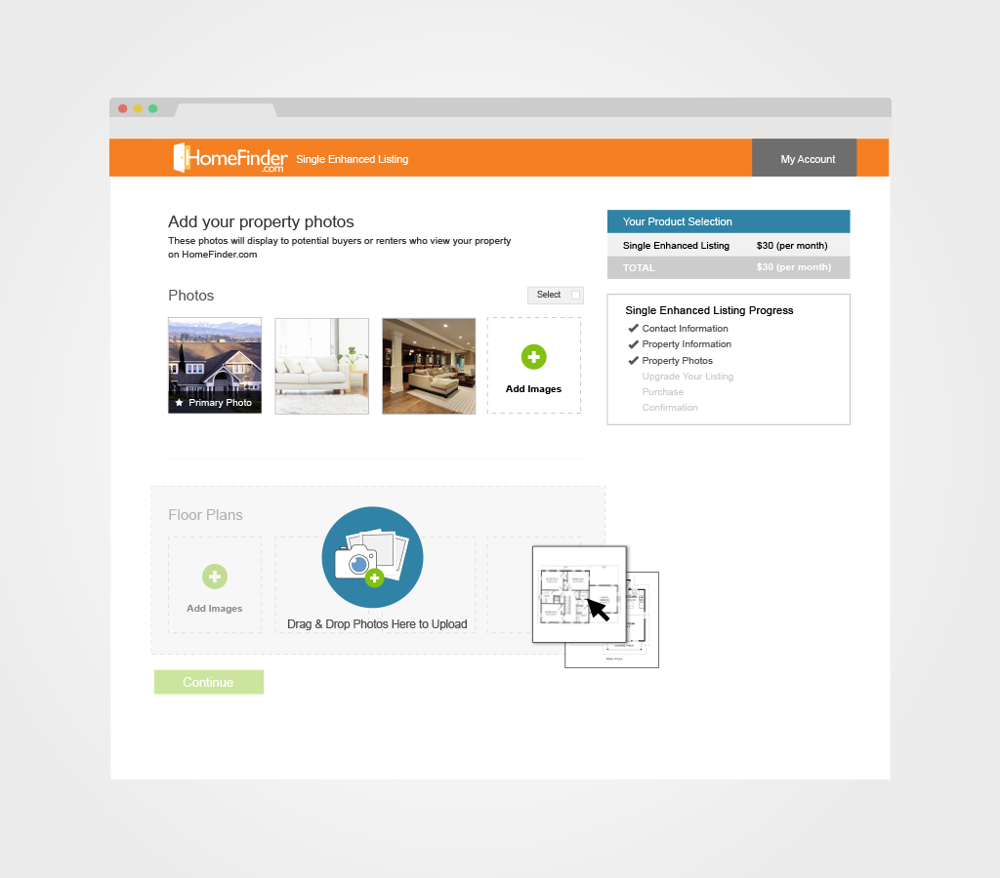

HomeFinder Image Uploader
user experience, user interface, visual design
While updating our mediaServices API, we selected to re-create our image uploader. Our goal was to create a visually simple, easy to use platform to upload and edit images. Due to HomeFinder.com’s user demographic, we chose to not advertise the drag and drop feature so that users who didn’t understand the functionality wouldn’t be confused while still allowing users who did, to benefit from the functionality and user experience.


 



